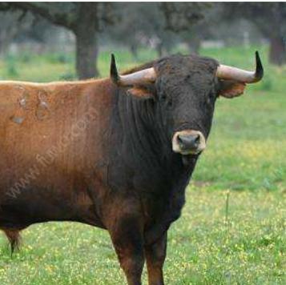
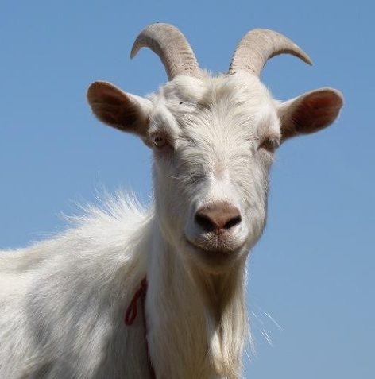

<!--
  Generated template for the LookWordRecogPicPage page.

  See http://ionicframework.com/docs/components/#navigation for more info on
  Ionic pages and navigation.
-->
<ion-header>

  <ion-navbar>
    <ion-title>看词识图</ion-title>
  </ion-navbar>

</ion-header>


<ion-content>
  <div id="details">
    <div>
      <span id="schedule">进度：10/10</span>
      <span id="overtime">00:10</span>
    </div>
    <div>
      <span id="score">得分：<span style="color: #f00 !important;">90</span>/100</span>
      <span id="end" [hidden]="!over">已结束</span>
    </div>
  </div>

  <div id="test" [hidden]="over">
    <div id="question">goat</div>
    <div id="option">
      
      
      
      
    </div>
    <div id="sub">提交</div>
  </div>

  <div id="result" [hidden]="!over">

  </div>
</ion-content>
